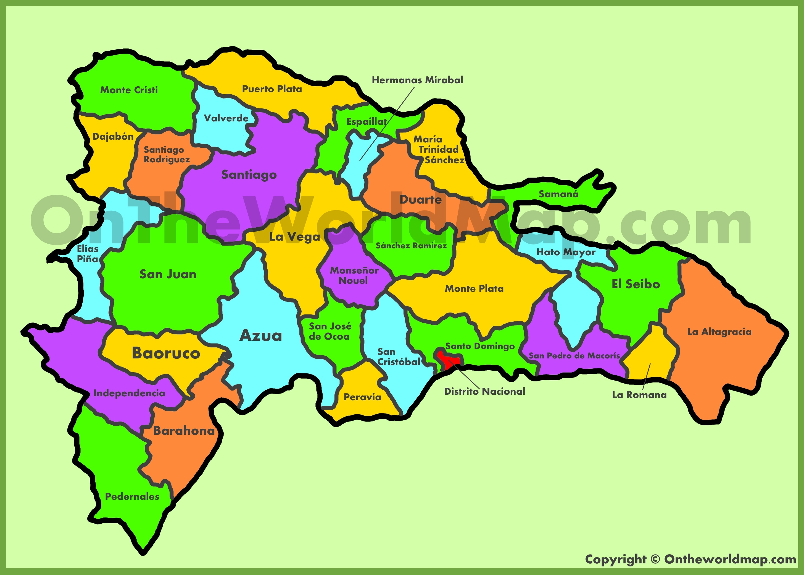

Dominican Republic

- Azua
- Bahoruco
- Barahona
- Dajabon
- Distrito Nacional
- Duarte
- Elías Piña
- El Seibo
- Espaillat
- Hato Mayor
- Hermanas Mirabal
- Independencia
- La Altagracia
- La Romana
- La Vega
- María Trinidad Sánchez
- Monseñor Nouel
- Monte Cristi
- Monte Plata
- Pedernales
- Peravia
- Puerto Plata
- Samaná
- Sánchez Ramírez
- San Cristóbal
- San José de Ocoa
- San Juan
- San Pedro de Macorís
- Santiago
- Santiago Rodríguez
- Santo Domingo
- Valverde